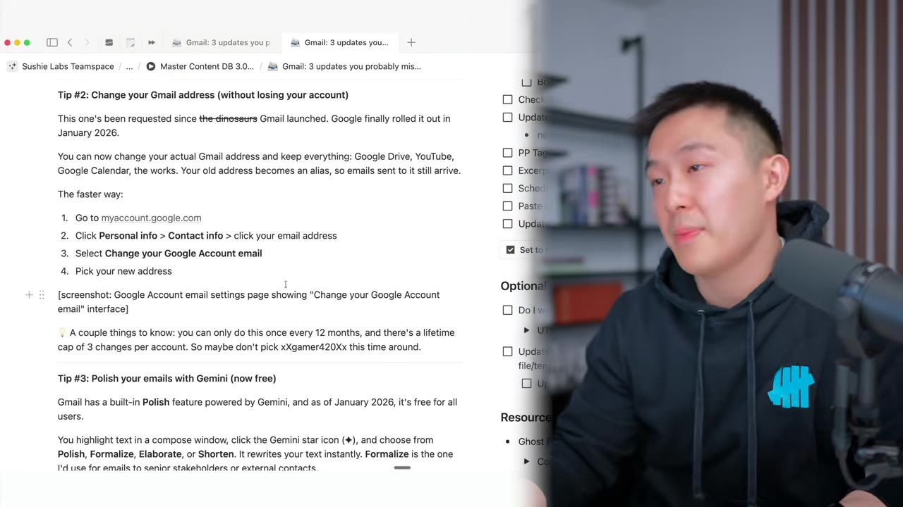
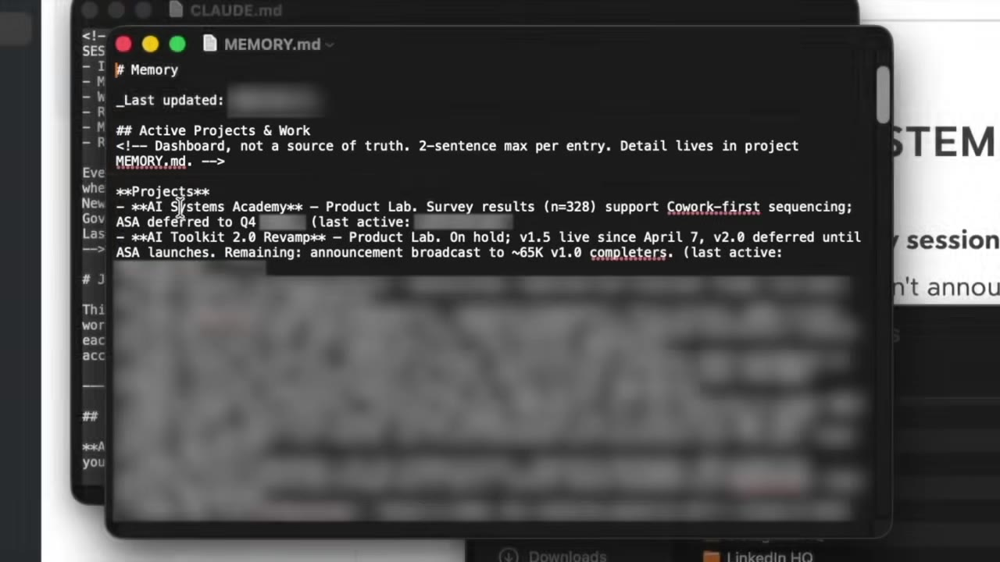

Figma's co-founder and CEO breaks down taste, craft, and point of view — and explains why the future of building products is visual-first design, not prompting.
Watch on YouTubeDylan Field's framework for three distinct but overlapping skills: taste, craft, and point of view.

Dylan defines taste as navigating the possibilities of what's out there and having clear preferences you can articulate — not just having good taste, but helping others understand what you're going for.
Craft is pushing past where others might push and thinking about things at every level of abstraction — making sure everything fits together from the macro down to the micro.
Point of view is expressing through a product something unique that you see in the world — bringing insight to life that moves a conversation forward. "If everyone agrees with your point of view, you're probably not having much of a point of view."
"If you don't have a point of view, then the stakeholders or the users would define your point of view." — Peter Attia
Can AI learn taste? Dylan says models have reached a point where, with the right prompt and references, you can get incredible outputs — but the human is always the judge.
"I never found as where I could do with Gemini 3.1, feeling like, oh great, I got my answer, one shot, done." — Dylan Field
Dylan sees a hierarchy of creative tools: direct manipulation on a canvas is superior to prompting, and design direct manipulation is superior to code editing when adjusting spacing, color, and layout. The key insight is that AI generates outputs that light up the possibility space — but from there, the human must explore, diverge, and converge.
The linear process of ideation → alignment → design → production is gone. In its place: a web of hops between divergent and convergent phases, starting anywhere and going everywhere.

The old process required writing 16-page PRDs and intermediate artifacts before even building a product. Now, with code being "basically free," you can prototype variations immediately. Dylan's advice:
"Stop two-thirds of the way through that design. That first third is enough to go prototype now. You're going to learn from using it. And then go explore more options from there once you know the physics of the system."
The design is never done until the product ships — and even after. "That's the beauty of digital: that you never have to say it's done."
The tension between velocity and direction: you need to run fast, but toward the right thing.
Dylan describes how Figma encourages rapid prototyping over internal prep bloat. His hack: showing five different ideas to customers simultaneously removes the pressure of committing to one direction. "You can go in either direction there, but you just have to maximize learning."
Keep the velocity, but have some sense of cardinality. Know where you're going. You don't want to run in circles.— Dylan Field
About roadmaps: some projects are deterministic enough for long-term planning, others require watching and reacting rapidly. "The faster you can react, the better. You have to set yourself up to be able to do that."
Does auto-layout and design systems constrain creativity? Dylan says it's an inherent tension — more structure means less freedom to work fluidly — but the goal is to go in and out of structure as fast as possible.
"My perfect world is one where you're able to go in and out of auto layout as fast as you can. And you're able to kind of ignore it, flatten it, and then you can reapply it."
About 60% of designs in Figma are now created by non-designers — PMs, researchers, support staff. The best researchers use Figma Make to create functioning prototypes instead of written reports, giving teams something tangible to explore.
Dylan sees the value moving up the stack: instead of writing detailed code specifications, designers will influence complex systems from the blueprint level.
I'm hoping that as we move ahead, the world gets a lot more visually interesting, too. Aesthetically, we've been in a bit of a rut for a while as a design industry.— Dylan Field
"I think that when we're working on the more product side or design side, we're looking for people who are technical, but also people that have great craft and have that judgment. The judgment is extremely important." — Dylan Field
Even for agent design, Dylan circles back to humans as the primary concern.
"Humans are the most important case still. Even for agents, you got to audit them. You have to understand what they're doing."
The industry will look back on this time and see how early it was in the world of AI and how that fits into the products being built. The divergence-convergence process — exploring possibilities and then narrowing — is something most AI tools still haven't mastered.
:::